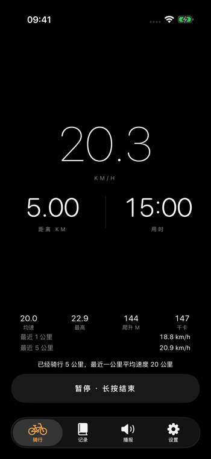
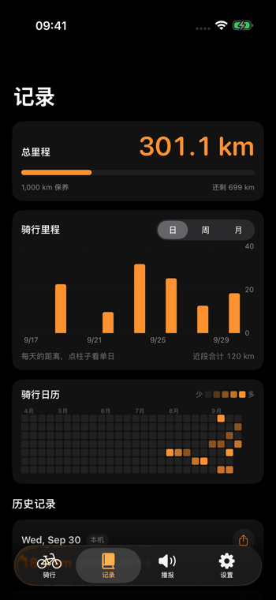
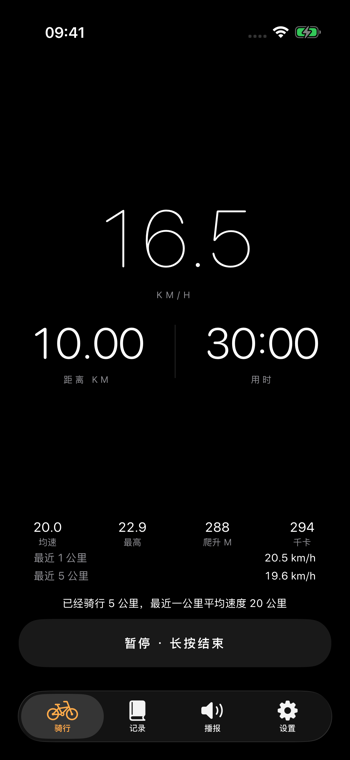

每公里报一次数，配速掉线提醒你，骑完还有一句不正经的夸奖。混音播放，不暂停你的音乐和播客。
手表记的、手机记的，都汇成一个总里程。什么时候该保养、这个月骑了多少，打开就有。
骑行是长时间运动。OLED 纯黑即熄灭，骑行页永远 100% 黑底，不需要变暗的花招。
速度用 iPhone 定位与运动协处理器直接算，室内 GPS 被挡也能兜底。不导流，不另建孤岛。
数据都在本机与健康，无服务器，随时全量导出 Markdown。你的数据属于你，也随时可以离开。
永久不出现广告，也不卖货。播报是你的耳机，不是别人的货架。
代码公开，欢迎学习和自建。仅限非商业用途。
能用苹果就苹果：锁屏卡片像锁屏卡片，日历像日历。不重新发明系统已经做好的东西。